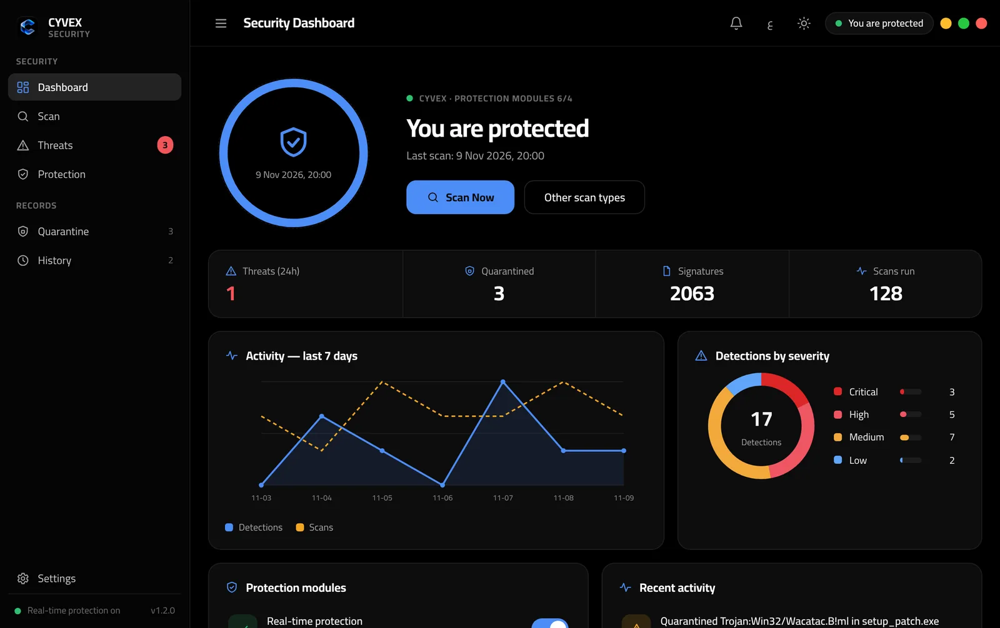
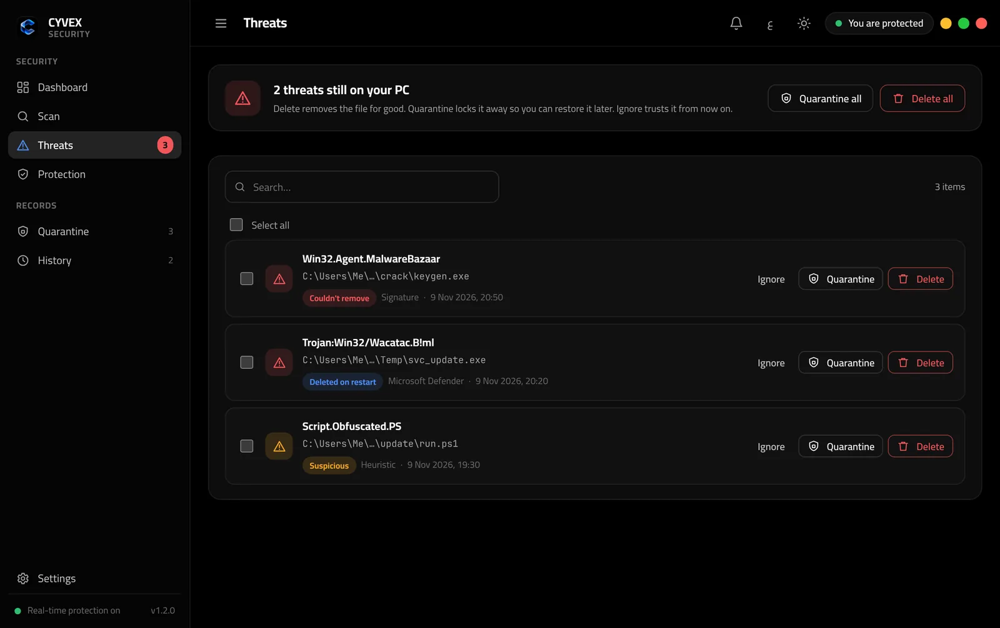
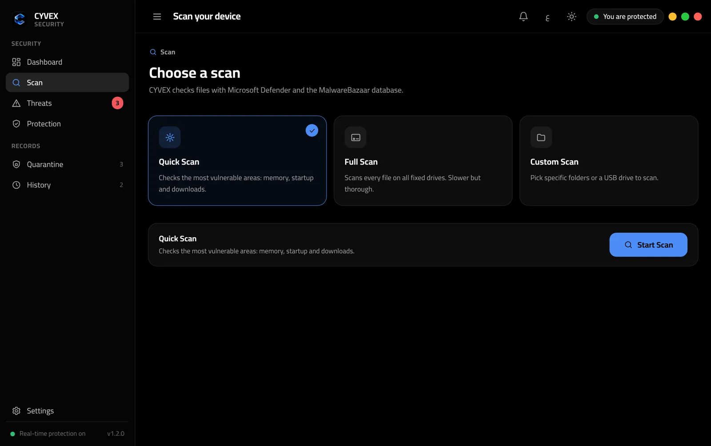
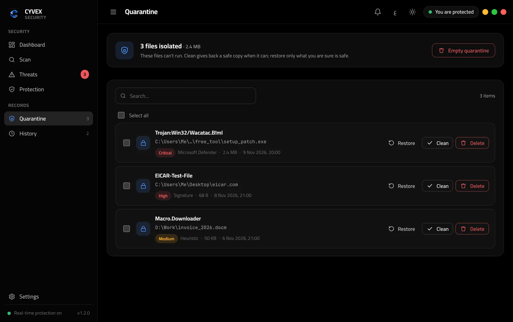
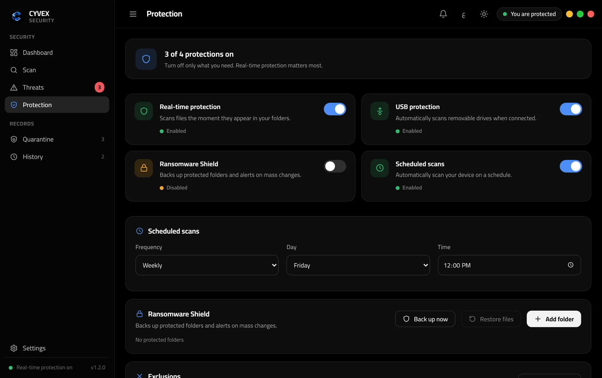
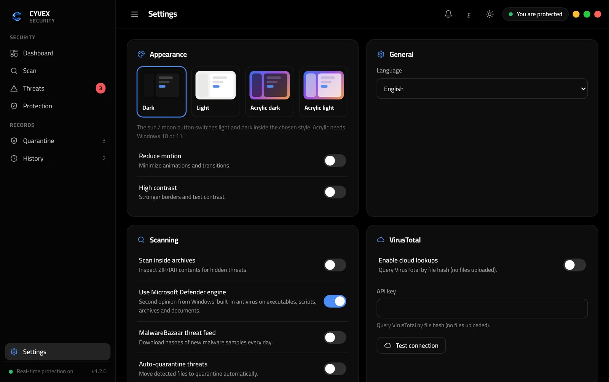
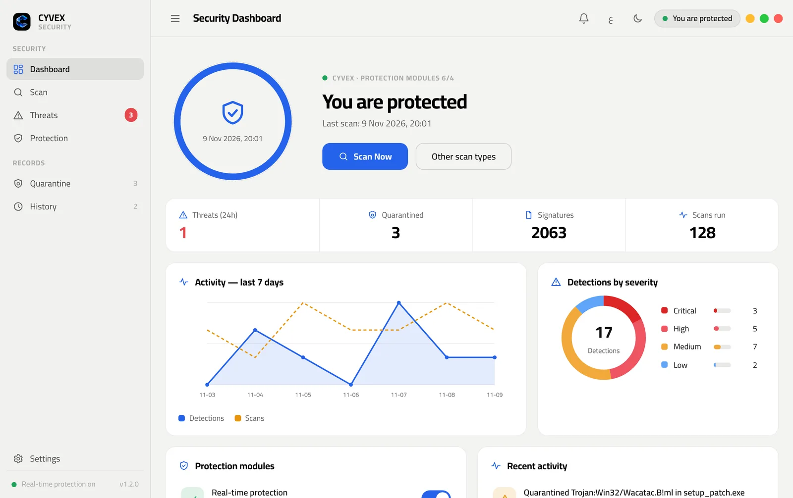
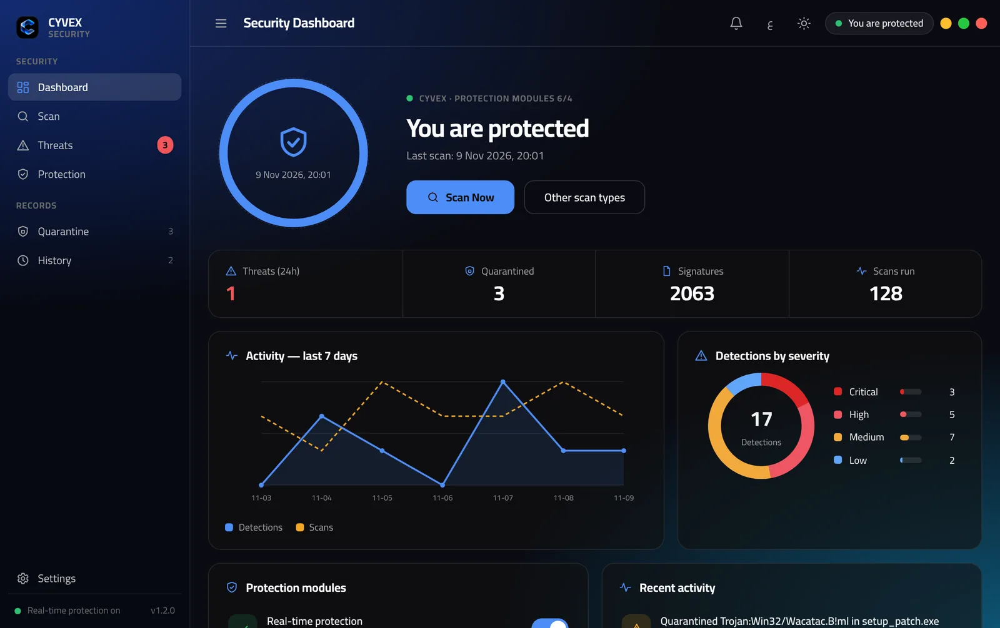

CYVEX
Quiet protection
for Windows.
Stops malware before it runs. Then cleans up after it.

Four steps, in seconds.
-
01
Detect
A new file appears in Downloads, Desktop or another watched folder. CYVEX checks its fingerprint against MalwareBazaar, asks Microsoft Defender, and looks for risky scripts and macros.
-
02
Isolate
The file is moved into quarantine and scrambled, so it can't run. If the malware is already running, CYVEX stops its process first.
-
03
Clean up
It removes what the threat added to start with Windows: Run keys, Startup shortcuts and scheduled tasks. Each removal is backed up first.
-
04
Restore
Got a document infected with macros? Clean gives you back a safe copy: harmful macros stripped, repaired by Defender, or restored from the Shield backup.
The antivirus already built into Windows gives a second opinion on every executable, script and archive.
Fingerprints of new malware samples from abuse.ch, updated about every six hours.
Catches double extensions, hidden scripts and macro documents in risky places, while skipping browser caches to keep false alarms low.
Four shields. One switch each.
Real-time protection
Scans files the moment they land in Downloads, Desktop, Documents and Temp. If Windows blocks a file first, CYVEX still tells you.
USB protection
Scans a flash drive as soon as you plug it in.
Ransomware Shield
Backs up your important folders and warns you when many files change at once.
Scheduled scans
Daily or weekly, at the time you pick.
You decide on every threat
The Threats page lists everything that still needs you, with Delete, Quarantine and Ignore for one file or all of them. Suspicious files are reported, not deleted behind your back.
Clear screens, plain words.







Straight answers.
Does it replace Microsoft Defender?
No, it works with it. CYVEX uses Defender as one of its engines and adds the MalwareBazaar database, its own rules, quarantine, clean-up and the ransomware shield on top.
How do I turn on the MalwareBazaar database?
Create a free account at auth.abuse.ch, copy your Auth-Key, and paste it in CYVEX Settings. The database downloads on its own and refreshes about every six hours.
What happens when I close the window?
CYVEX keeps protecting you from the tray, next to the clock. Open it again from the tray icon or the shortcut, or choose Quit from the tray to close it completely.
Does it send my files anywhere?
No. Files are checked on your PC. The optional VirusTotal lookup sends only a file's fingerprint, never the file, and it is off by default.
Get CYVEX
Free for Windows. Installs in a few seconds and keeps your settings when you update.
Download CYVEX 1.2.0- Open the downloaded file.
- On "Windows protected your PC", click More info, then Run anyway.
- Open CYVEX from the last setup screen. Protection starts right away.